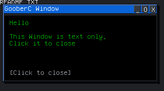
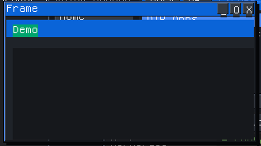

goober.gui
Windowed apps on the desktop: text lines, or a color canvas for artwork and simple games. This page follows gooberc/libs/gui.md.
use goober.gui
app guiWindow and text
window "Title" WxHcreates a windowtext "..."/text <expr>appends a text lineclearguiclears the lines and marks the window interactivewaitblocks until the user dismisses the window
Color canvas
Prefer named colors (NAVY, RED, PANEL, INK). Hex 0xRRGGBB still works. See Colors.
fill colorclears the canvas and sets the backgroundrect x y w h colordraws a filled rectangle in client coordinateslabel x y str fg bgdraws a string at(x, y)presentmarks the window dirty. Call it after a frame’s draw list
fill NAVY
rect 8 8 200 24 PANEL
label 16 14 "Score " + str score INK PANEL
rect 40 40 28 28 LIME
presentInput and timing
getkeypolls one key (0 if none) and pumps a desktop framekeyheld kis 1 if that key is currently held. It does not consume the queueclickedis 1 if the user clicked the window since the last read. Read it aftergetkeyorsleepmousex/mouseyare the client coordinates of that clickmillisis milliseconds since bootwinclosedis 1 if the window was closedstr nturns an int into a decimal stringnum sparses a decimal stringexitterminatessleep Nwaits aboutNmilliseconds while pumping the desktop
Key names are on the Keys page.
var last = millis
while winclosed == 0
var now = millis
var dt = now - last
last = now
present
sleep 1
endInteractive games should fill and redraw each frame, or use cleargui and text. Poll getkey and keyheld, and exit on Escape or winclosed. Keep a draw list under about 384 commands per frame.
A GooberC window

A canvas frame
